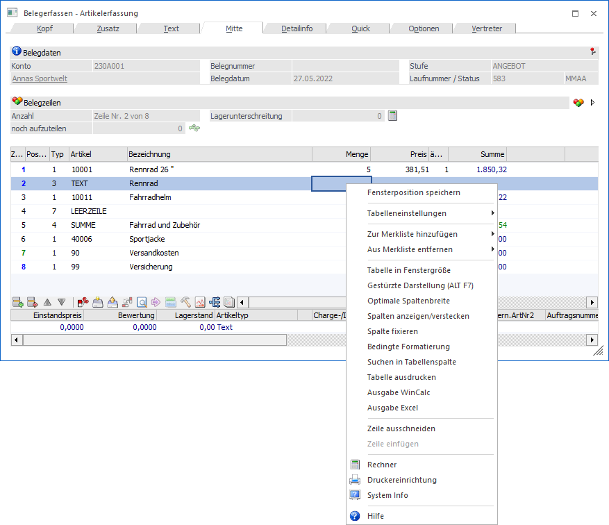
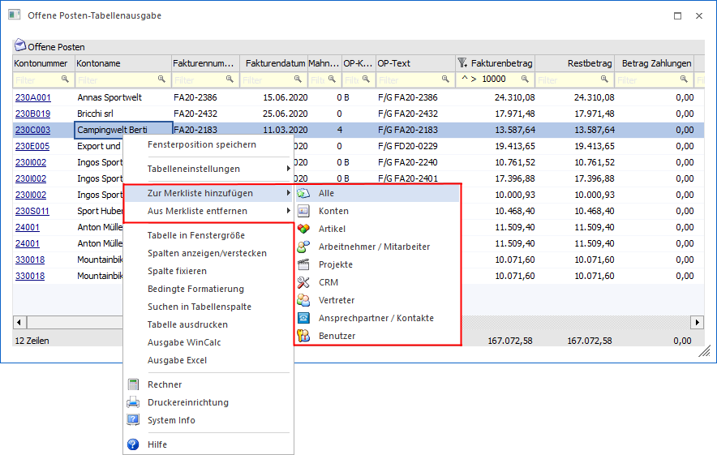

Wurde ein Fenster geöffnet, in der sich eine Tabelle befindet, so werden weitere Optionen angeboten.

Achtung
Eine detaillierte Beschreibung der Funktionen ist dem Kapitel WinLine Bedienung - Tabellen zu entnehmen.
Ø Tabelleneinstellungen - Tabelleneinstellungen speichern
Alle Änderungen an einer Tabelle werden beim Verlassen der WinLine verworfen. Sollen die Änderungen gespeichert werden, so ist dieses - mit Hilfe der Funktion "Tabelleneinstellungen speichern - benutzerspezifisch möglich. Folgende Einstellungen werden gespeichert:
ü Änderung der Spaltenbreite
ü Position der Spalten
ü Hinzufügen oder entfernen von Spalten
Hinweis
Gespeicherte Tabelleneinstellungen werden automatisch geladen.
Ø Tabelleneinstellungen - Gesamteinstellungen speichern
Im Gegensatz zu "Tabelleneinstellungen speichern" können mit "Gesamteinstellungen speichern" mehrere Tabellenaufbauten gespeichert und nach Wunsch geladen werden. Zusätzlich werden Sonderfunktionen der Tabelle (z.B. "Spalte gruppieren") ebenfalls bei der Speicherung bedacht. Folgende Einstellungen werden gespeichert:
ü Fixierung von Spalten
ü Sortierung der Spalten
ü Gruppierung von Spalten
ü Filterung in Spalten
Hinweis
Gespeicherte Gesamteinstellungen werden nicht automatisch geladen. Das Laden erfolgt im Ribbon über den Tabellenbutton "Gesamteinstellungen laden…" oder über das Kontextmenü der rechten Maustaste (Funktion "Tabelleneinstellungen - Gesamteinstellungen laden…" bzw. ""Tabelleneinstellungen - Einstellung "xxxx" laden").
Ø Zur Merkliste hinzufügen / Aus Merkliste entfernen
Mit Hilfe dieser Funktionen können die Daten der Tabelle, gemäß der definierten Objektauswahl des Untermenüs, in eine Merkliste / Kampagne übergeben oder entfernt werden.

Folgende Punkte sind hierbei zu beachten:
ü Die Funktionen stehen in Tabellen des WinLine ADMINs und der WinLine mobile nicht zur Verfügung.
ü Es werden die Datentypen immer aus den sichtbaren Zeilen ausgelesen. D.h. wurden Zeilen z.B. via Spaltenfilter ausgeblendet, so werden die Inhalte dieser Zeilen nicht berücksichtigt.
ü Die WinLine bestimmt über eine interne Matrix, um was für einen Datentyp es sich bei der Spalte "x" handelt. Nur weil der Name einer Spalte z.B. "Konto" lautet, heißt dieses nicht, dass dieses für die Übergabe ein z.B. "Personenkonto" ist.
ü Die Übergabe in bzw. aus der Merkliste / Kampagne erfolgt mit Hilfe des Programms Kampagne/Merkliste verändern.
Ø Tabelle in Fenstergröße
Mit Hilfe dieser Funktion kann die Tabelle auf Fenstergröße maximiert werden.
Ø Gestürzte Darstellung (ALT F7)
Über das Kontextmenü der rechten Maustaste (Funktion "Gestürzte Darstellung (ALT F7)") bzw. der Tastenkombination ALT + F7 kann die gestürzte Tabellendarstellung aktiviert bzw. deaktiviert werden. Hierdurch wird eine 2 Tabelle erzeugt, in welcher die Informationen der aktiven Zeile (1 Tabelle) vertikal dargestellt werden.
Achtung
Diese Funktion steht nur zur Verfügung, wenn in der Tabelle die sogenannte Suchzeile nicht aktivierbar ist und in der Tabelle mehr wie 3 Spalten existieren.
Ø Optimale Spaltenbreite
Mit Hilfe der Funktion "Optimale Spaltenbreite" wird automatisch die Spalte auf die optimale Größe eingestellt, so dass innerhalb der Spalte bei jedem Datensatz die entsprechenden Informationen komplett angezeigt werden können.
Ø Zeitpunkt auswählbar
Handelt es sich um eine Spalte des Typs "Datum", so wird zusätzlich die Auswahl "Zeitpunkt wählen" angeboten. Durch Aktivierung dieser Option wird bei Eingabefeldern der Spalte die Zeitpunkt-Auswahl zur Verfügung gestellt.
Beispiel

Ø Spalten anzeigen/verstecken
Bei bestimmten Tabellen (z.B. Belegerfassungstabelle oder Ergebnisstabelle des Artikelmatchcodes) können Spalten versteckt bzw. weitere Spalten anzeigt werden. Die Definition erfolgt über das Programm "Spalten anzeigen/verstecken", welches über das Kontextmenü der rechten Maustaste (Funktion "Spalten anzeigen/verstecken") aufgerufen werden kann.
Hinweis
Nähere Informationen entnehmen Sie bitte dem Kapitel Spalten anzeigen/verstecken).
Ø Spalten fixieren
Mit der Kontextmenü-Funktion "Spalten fixieren" (rechte Maustaste) kann eine Spalte in der Tabelle "festgestellt" werden. D.h. alle Spalten, die links von der fixierten Spalte stehen, werden - auch wenn in der Tabelle gescrollt wird - nicht bewegt. Ebenfalls über das Kontextmenü der rechten Maustaste kann die Fixierung wieder aufgehoben werden (Funktion "Spaltenfixierung entfernen").
Ø Bedingte Formatierung
Diese Option steht nur WinLine-Administratoren zur Verfügung und damit wird ein Fenster geöffnet, aus dem die gewünschte Bedingung (muss im WinLine ADMIN definiert worden sein) für dieses Eingabefeld ausgewählt werden kann.

Ø Suchen in Tabellenspalte
Durch Anwahl der Funktion "Suchen in Tabellenspalte" kann in einer Spalte nach einem Begriff gesucht werden.

Die Suche kann über die folgenden Wege aufgerufen werden:
ü Kontextmenü der rechten
Maustaste
Im Kontextmenü der rechten Maustaste steht die Funktion "Suchen in
Tabellenspalte" zur Verfügung. Durch Anwahl der Funktion öffnet sich das Fenster
"Eingabe" in welchem ein Suchbegriff eingegeben werden kann. Mit Anwahl des
Buttons "OK" erfolgt die Suche in der Tabellenspalte.
ü Taste F6
Durch Anwahl der Taste
F6 öffnet sich das Fenster "Eingabe" in welchem ein Suchbegriff eingegeben
werden kann. Mit Anwahl des Buttons "OK" erfolgt die Suche in der
Tabellenspalte.
Hinweis
Wurde bereits ein Suchbegriff eingegeben, so wird durch nochmalige Anwahl der Taste F6 die Suche fortgesetzt.
ü Tastenkombination STRG + F6
Da
in einigen Programmfenstern die Taste F6 belegt ist, kann durch Anwahl der
Tastenkombination STRG + F6 ebenfalls das Fenster "Eingabe" geöffnet werden.
Nach Eingabe eines Suchbegriffs erfolgt durch Anwahl des Buttons "OK" die Suche
in der Tabellenspalte.
Hinweis
Wurde bereits ein Suchbegriff eingegeben, so wird durch nochmalige Anwahl der Tastenkombination STRG + F6 die Suche fortgesetzt.
Ø Tabelle ausdrucken
Mit dieser Option kann der Inhalt einer Tabelle ausgedruckt werden. Dabei ist zu beachten, dass die Spalten in der Breite ausgedruckt werden, wie sie auch am Bildschirm dargestellt werden. Unter Umständen kann es dazu kommen, dass nicht alle Spalten angedruckt werden.
Ø Ausgabe WinCalc
Durch Anwahl der Funktion "Ausgabe WinCalc" kann der Inhalt der Tabelle an das Programm "WinCalc" übergeben werden.
Ø Ausgabe Excel
Mit Hilfe der Funktion "Ausgabe Excel" wird der Inhalt der Tabelle an Microsoft Excel übergeben und direkt geöffnet (XLSX-Format).
Hinweis
Bei gleichzeitiger Anwahl der SHIFT-Taste wird ein Speicherdialog geöffnet und die Excel-Datei nicht automatisch geöffnet.